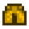

Apricot
Jump to navigation
Jump to search
| Apricot | |||||||||||||||||||||||||||
| A tender little fruit with a rock-hard pit. | |||||||||||||||||||||||||||
| Information | |||||||||||||||||||||||||||
| Source | Apricot Tree | ||||||||||||||||||||||||||
| Seed | Apricot Sapling | ||||||||||||||||||||||||||
| Growth Time | 28 days | ||||||||||||||||||||||||||
| Harvest Season | |||||||||||||||||||||||||||
| Energy / Health |
|
||||||||||||||||||||||||||
|
|||||||||||||||||||||||||||
|
|||||||||||||||||||||||||||
The Apricot is a fruit grown by planting an Apricot Sapling, waiting 28 days for it to grow into an Apricot Tree, and harvesting the tree during the Spring.
An Apricot may be purchased at the Traveling Cart for  150–1,000g or found in The Farm Cave, if the fruit bat option is chosen.
150–1,000g or found in The Farm Cave, if the fruit bat option is chosen.
Gifting
| Villager Reactions
| |
|---|---|
| Like | |
Bundles
Apricot is an option for the  Artisan Bundle in the Pantry.
Artisan Bundle in the Pantry.
Recipes
| Image | Name | Description | Ingredients | Energy / Health | Recipe Source(s) | Sell Price | |||
|---|---|---|---|---|---|---|---|---|---|
| Fruit Salad | A delicious combination of summer fruits. |
|
Tailoring
Apricot can be used in the spool of the Sewing Machine to create the dyeable Relaxed Fit Pants.  It can be used in dyeing, serving as an orange dye at the dye pots, located in Emily's and Haley's house, 2 Willow Lane.
Quests
Emily requests an apricot by mail on the 6th of Spring (year 2) in the "Fresh Fruit" Quest. The reward is  600g and 1 Friendship heart.
600g and 1 Friendship heart.
History
| Trees | |
|---|---|
| Trees | Green Rain Trees • Mahogany Tree • Maple Tree • Mushroom Tree • Mystic Tree • Oak Tree • Palm Tree • Pine Tree |
| Fruit Trees | Apple Tree • Apricot Tree • Banana Tree • Cherry Tree • Mango Tree • Orange Tree • Peach Tree • Pomegranate Tree |
| Seeds | Acorn • Mahogany Seed • Maple Seed • Mossy Seed • Mushroom Tree Seed • Pine Cone • Mystic Tree Seed |
| Fruit | Apple • Apricot • Banana • Cherry • Mango • Orange • Peach • Pomegranate |
| Misc | Large Log • Large Stump • Tea Bush |